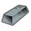
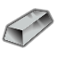
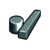

超钢级·太空·司太立合金 StelliteAlloy
超钢级家具建筑674防具142穿戴件40近战工具106远程武器7其它17共986件 价值35 质量0.35 护甲1.50/1.40/0.14 利钝1.35/1.50
Core_SK · def自带 · Things/Item/Ingot

超钢级·太空·尼蒙尼克合金 Nimonic
超钢级家具建筑674防具142穿戴件40近战工具106远程武器7其它17共986件 价值35 质量0.35 护甲1.45/1.40/0.14 利钝1.30/1.45
Vile's Materials Science · def自带 · Things/Item/Ingot

超钢级·太空·派洛梅特高温合金钢 Pyromet
超钢级家具建筑674防具142穿戴件40近战工具106远程武器7其它17共986件 价值30 质量0.35 护甲1.50/1.35/0.16 利钝1.20/1.35
Vile's Materials Science · def自带 · Things/Item/Ingot

钛铁合金 Plasteel
代钢级家具建筑674防具142穿戴件40近战工具106远程武器7其它17共986件 价值45 质量0.25 护甲1.60/1.40/0.17 利钝1.28/1.15
游戏本体 Core · def自带 · Things/Item/Ingot

代钢级·太空·碳化钨 PobediteAlloy
代钢级家具建筑653防具142穿戴件40近战工具96远程武器7其它8共946件 价值40 质量0.40 护甲1.45/1.40/0.13 利钝1.44/1.44
Core_SK · def自带 · Things/Item/Ingot

代钢级·太空·特纳卢姆 Tennalum
代钢级家具建筑651防具142穿戴件40近战工具96远程武器7其它8共944件 价值30 质量0.20 护甲1.40/1.20/0.07 利钝1.15/1.25
Vile's Materials Science · def自带 · Things/Item/Ingot

代钢级·太空·艾尔梅特超高强度钢 AerMet
代钢级家具建筑651防具142穿戴件40近战工具96远程武器7其它8共944件 价值35 质量0.35 护甲1.65/1.55/0.12 利钝1.33/1.40
Vile's Materials Science · def自带 · Things/Item/Ingot

代钢级·太空·金刚砂 Carborundum
代钢级家具建筑651防具142穿戴件40近战工具96远程武器7其它8共944件 价值22 质量0.30 护甲1.70/1.60/0.14 利钝1.34/1.29
Vile's Materials Science · def自带 · Things/Item/Material/Carborundum

代钢级·太空·镍钛合金 NitinolAlloy
代钢级家具建筑647防具142穿戴件40近战工具96远程武器7其它8共940件 价值45 质量0.35 护甲1.52/1.22/0.16 利钝1.40/1.22
Core_SK · def自带 · Things/Item/Ingot

代钢级·太空·麦克斯梅特超耐磨钢 MaxametSteel
代钢级家具建筑647防具142穿戴件40近战工具96远程武器7其它8共940件 价值32 质量0.35 护甲1.54/1.40/0.12 利钝1.55/1.35
Vile's Materials Science · def自带 · Things/Item/Ingot